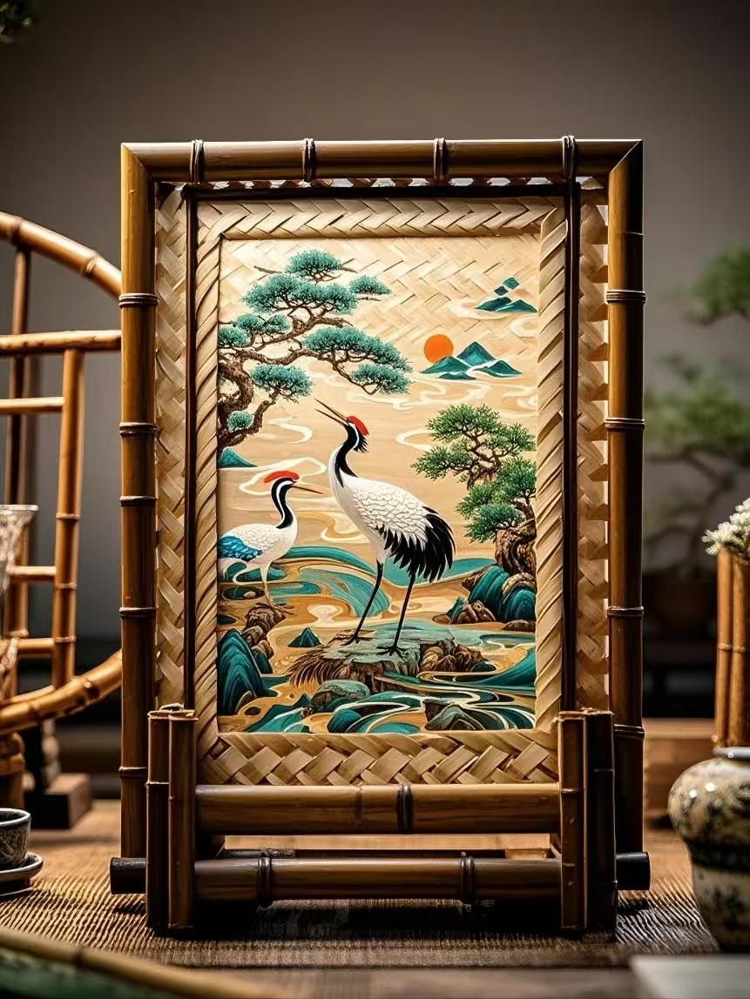
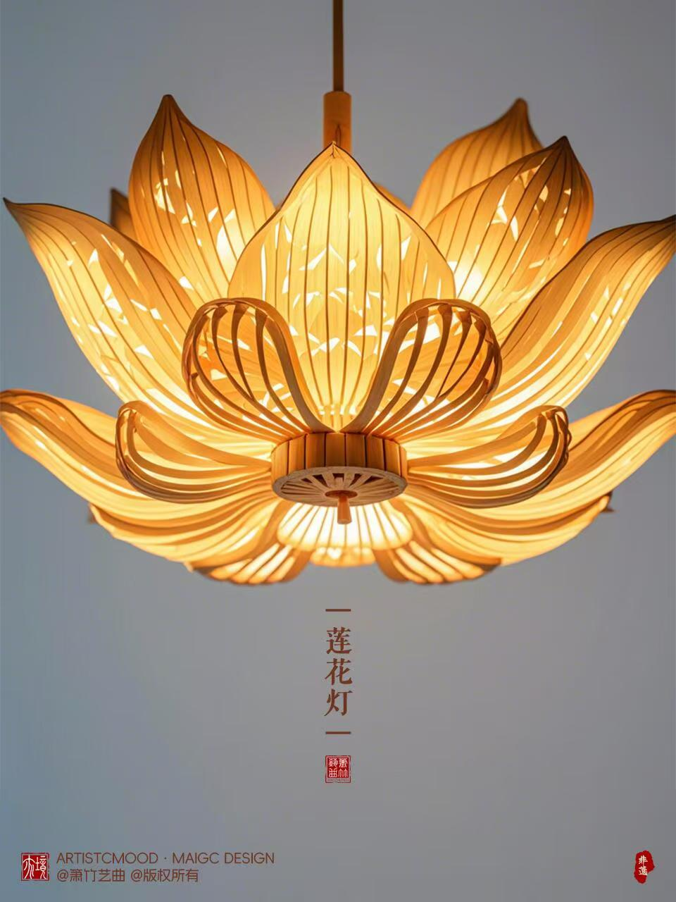

竹编产品
在日常生活用品领域，竹编产品随处可见。竹篮是使用频率极高的传统器具，菜篮编织细密、容量可观，方便人们采买果蔬；收纳篮规整方正，可将衣物、杂物收纳得井井有条。竹席以光滑凉爽、透气吸汗的特性，成为夏日消暑必备。此外，竹制的餐具、杯垫、果盘等，在满足实用功能的同时，还能为生活增添自然气息。
装饰类竹编产品尽显艺术之美。竹编屏风以花鸟鱼虫、山水风景等传统纹样，或简约的几何图案为装饰，既分隔空间，又成为视觉焦点；竹编灯具的灯罩经竹篾编织，能透出柔和光影，营造温馨氛围；竹编画更是将竹丝巧妙组合，创作出栩栩如生的人物、风光画作，极具艺术收藏价值。
随着时代发展，创意竹编产品不断涌现。时尚界，竹编包款式多样，从精致手拿包到实用双肩包，成为时尚达人的心头好；家居领域，竹编沙发、椅子、茶几等将传统工艺与现代设计融合，舒适美观；还有竹编文具、饰品等小物件，赋予传统技艺时尚活力，让竹编文化以崭新姿态融入现代生活 。这些不同类型的竹编产品，无一不彰显着传统手工艺的智慧与魅力。